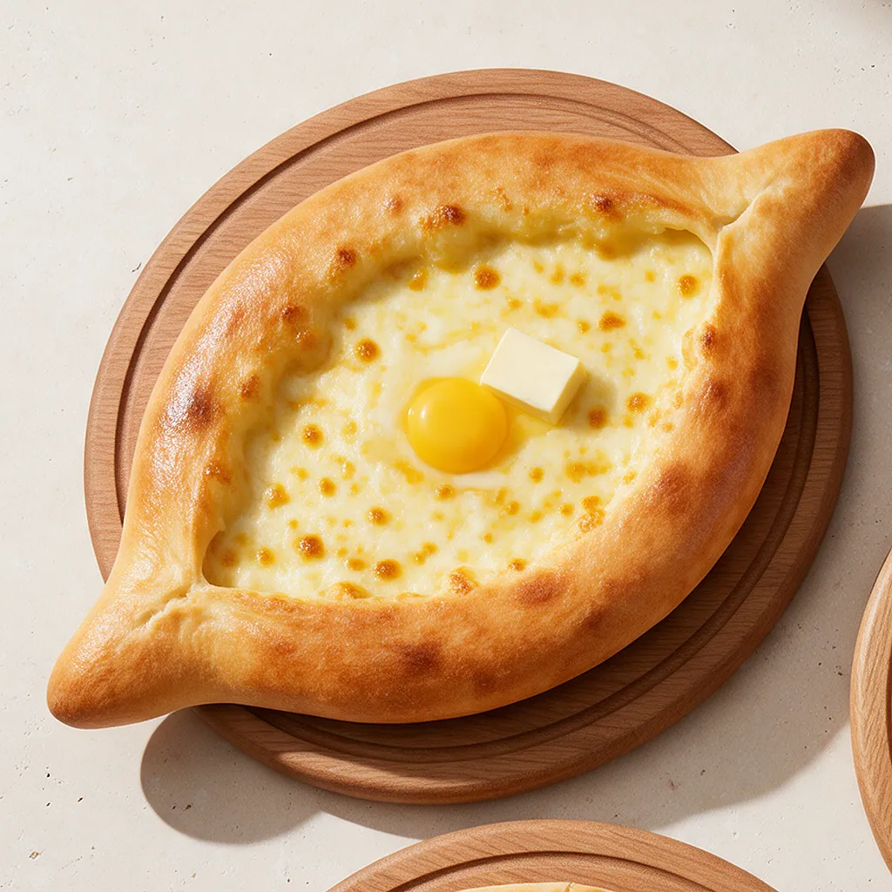
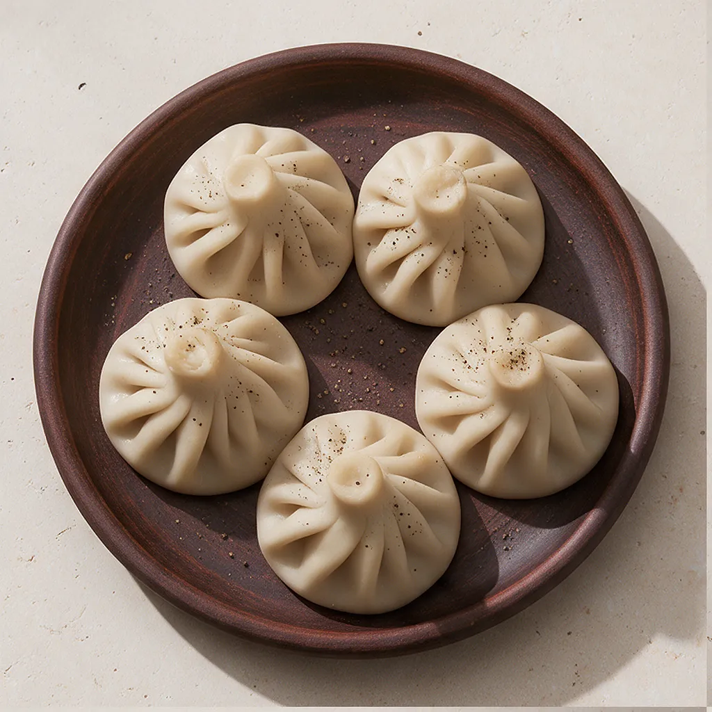
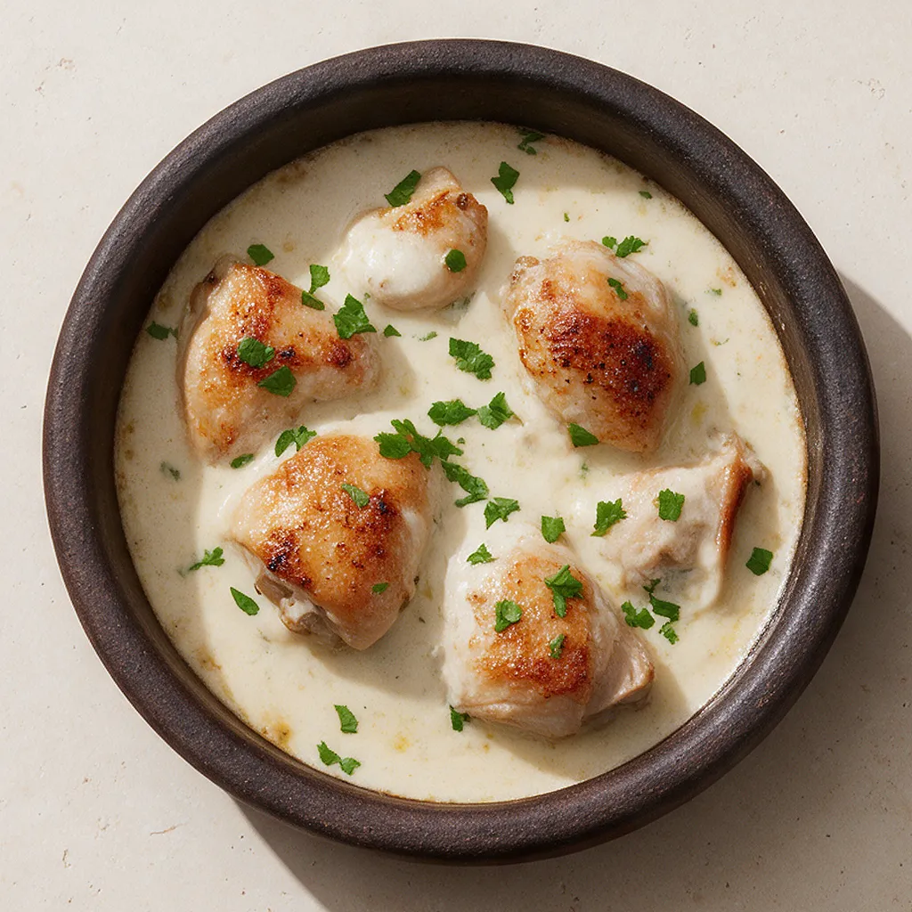

О нас
«Хачу Пури» – грузинская кухня на фудкорте ТРЦ на Весенней, 56 в Волгодонске. Лепим хинкали, печём хачапури и варим супы по грузинским рецептам.
О заведении
Здесь будет короткая история «Хачу Пури»: кто и когда открыл точку, почему грузинская кухня и что для вас важно в работе.
Два-три абзаца достаточно. Текст подготовит заказчик, вёрстка уже рассчитана на него.
Наша кухня
Тесто для хинкали и хачапури замешиваем сами, сыр берём сулугуни и имеретинский, зелень и специи – как в грузинских рецептах: кинза, чеснок, хмели-сунели, грецкий орех.
Всё готовим после заказа, поэтому хачапури приезжает с горячим сыром, а хинкали – с бульоном внутри.




Атмосфера
Как выглядит точка и как мы готовим.
Подпись к фото: например, где удобно сесть на фудкорте.
Подпись к фото: открытая кухня, печь, рабочее место.
Подпись к фото: как лепим хинкали или раскатываем тесто.